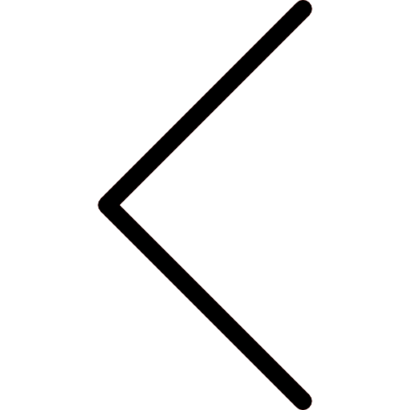

-
O que é a Ordem Assintótica ?
Em ciência da computação, ordem Assintótica é uma maneira de comparar o crescimento de duas ou mais funções matemáticas. Ela é baseada na ideia de que, para valores suficientemente grandes de n, a diferença entre as funções é insignificante. Em termos simples, a ordem assíntotica de uma função f(n) é o comportamento de f(n) quando n tende ao infinito. Por exemplo, a função f(n) = n^2 cresce mais rápido que a função g(n) = n na medida em que n aumenta. Isso porque, para valores suficientemente grandes de n, f(n) será muito maior que g(n).
- bsdasd
- csdasd
- dsdasd
- fsdasd
- gsdasd